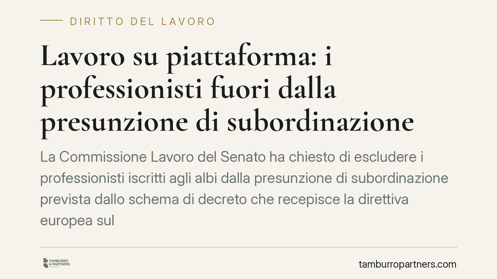

Lavoro su piattaforma: i professionisti fuori dalla presunzione di subordinazione
La Commissione Lavoro del Senato ha chiesto di escludere i professionisti iscritti agli albi dalla presunzione di subordinazione prevista dallo schema di decreto che recepisce la direttiva europea sul lavoro tramite piattaforme. Resterebbero invece ferme le tutele sulla gestione algoritmica. È un passaggio che ridisegna i confini tra autonomia professionale e lavoro su piattaforma.

Il fatto
La 10ª Commissione Lavoro del Senato ha espresso un parere sullo schema di decreto legislativo di recepimento della Direttiva (UE) 2024/2831, relativa al miglioramento delle condizioni di lavoro nel lavoro mediante piattaforme digitali.
La richiesta principale è netta: escludere i professionisti iscritti agli albi dall'ambito della presunzione legale di subordinazione. Secondo la Commissione, chi esercita una professione ordinistica opera già all'interno di un quadro deontologico e contrattuale proprio, e non andrebbe assoggettato automaticamente a un meccanismo pensato per tutelare lavoratori privi di tutele.
Resterebbero invece applicabili, anche a questi soggetti, le disposizioni sulla gestione algoritmica, ossia le regole di trasparenza e controllo sui sistemi automatizzati che assegnano incarichi, valutano le prestazioni o incidono sulla continuità del rapporto.
Inquadramento normativo
La Direttiva (UE) 2024/2831 introduce due pilastri distinti. Il primo è una presunzione legale: in presenza di indici di direzione e controllo da parte della piattaforma, il rapporto si presume di lavoro subordinato. Si tratta di una presunzione relativa (*iuris tantum*): può essere superata dimostrando, in concreto, l'assenza di eterodirezione. Il testo europeo rimette agli Stati membri la definizione puntuale degli indici e delle modalità di prova.
Il secondo pilastro riguarda la gestione algoritmica: trasparenza sui sistemi automatizzati, diritto a una supervisione umana sulle decisioni rilevanti, limiti al trattamento di determinati dati. Queste tutele prescindono dalla qualificazione del rapporto e si applicano a prescindere dalla natura autonoma o subordinata della prestazione.
Nell'ordinamento interno, l'estensione delle tutele del lavoro subordinato alle collaborazioni etero-organizzate dal committente è prevista dall'art. 2, comma 1, del D.lgs. 81/2015; il successivo comma 2 contiene invece le ipotesi di esclusione. Il recepimento della direttiva si inserisce in questo tessuto, imponendo un coordinamento con la disciplina già vigente sulle collaborazioni organizzate dal committente.
Il termine di recepimento è quello fissato dalla stessa direttiva; l'intervento normativo nazionale dovrà intervenire entro la scadenza europea, che va verificata sul testo ufficiale della direttiva.
Implicazioni pratiche
Per i professionisti iscritti agli albi. L'esclusione dalla presunzione eviterebbe il rischio di una riqualificazione automatica del rapporto come subordinato per il solo fatto di operare tramite piattaforma. Non verrebbero però meno le tutele algoritmiche: trasparenza e diritto di contestare decisioni automatizzate resterebbero esigibili.
Per le piattaforme digitali. Il parere, se accolto, ridurrebbe l'area di applicazione della presunzione, ma non attenuerebbe gli obblighi informativi e procedurali sui sistemi di gestione automatizzata. Le piattaforme dovranno comunque adeguare le procedure interne: informativa sugli algoritmi, tracciabilità delle decisioni, canali di riesame umano.
Per i rider e i lavoratori su piattaforma non professionisti. Per questa categoria la presunzione di subordinazione resta il presidio centrale. L'eventuale esclusione dei professionisti non incide sul loro perimetro di tutela.
Resta aperta una questione di fondo: la distinzione tra professionista ordinistico e prestatore non qualificato dovrà essere definita con precisione, per evitare zone grigie e contenzioso sulla qualificazione.
Cosa fare in concreto
- Mappate i rapporti in essere. Censite le collaborazioni attivate tramite piattaforma e classificatele per natura della prestazione e profilo del prestatore.
- Verificate gli indici di eterodirezione. Analizzate le modalità operative (vincoli di orario, poteri di assegnazione, sistemi di rating) per valutare il rischio di riqualificazione.
- Adeguate le procedure algoritmiche fin da ora. Predisponete informative sui sistemi automatizzati e meccanismi di supervisione umana: questi obblighi valgono a prescindere dall'esito sulla presunzione.
- Monitorate l'iter del decreto. Il testo definitivo potrà discostarsi dal parere della Commissione; non consolidate scelte organizzative prima della pubblicazione.
- Documentate l'autonomia del rapporto. Dove la prestazione è genuinamente autonoma, conservate evidenze contrattuali e operative utili a superare la presunzione.
Disclaimer
Contributo informativo a cura di Tamburro & Partners Avvocati. Non costituisce parere legale.
Ogni storia di lavoro ha i suoi tempi.
Se gestisci HR e vuoi un confronto su contenzioso, ispezioni o licenziamenti, scrivi allo studio. Ti rispondiamo entro un giorno lavorativo.